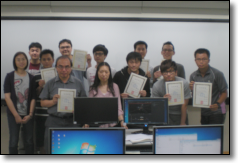
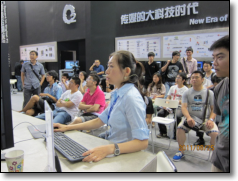
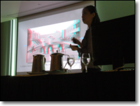
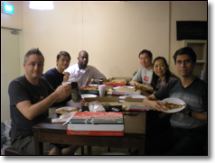

Janice is a Foundry and fxphd certified Nuke Trainer. She has a full-time job but enjoys doing occasional Nuke training and events. Most of the time this happens in Asia. She has done training for beginners and professionals alike, at training facilities as well as post production companies. The following are some photographs of the events and classes she has done.
If you are interested in working with Janice for Nuke training, simply send her a message from the Contact Me page.

Nuke training at Institute for Information Industry, Taipei, May 2012

Nuke demo at BIRTV, Beijing, August 2011

Seminar at CG Overdrive, Singapore, June 2010

Nuke training at Media Asylum, Singapore, June 2010